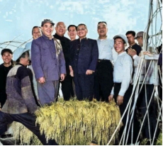
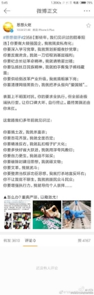
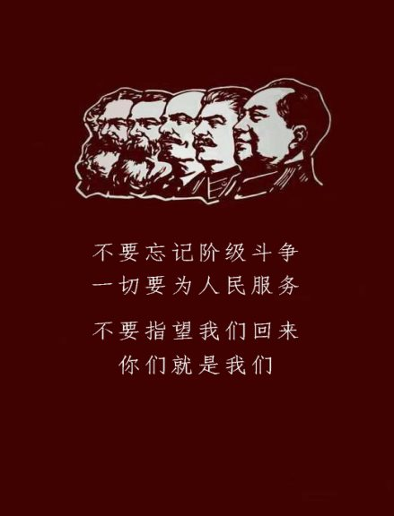

人民在思想上的现状和共产主义者应有的对策
By ArbeiterKlassen
进入20世纪，俄国首先爆发了1917年的十月革命，一声炮响给中国人民带来了马克思主义。紧接着是1915年中国新文化运动向马克思主义的转变和1919年五四运动的爆发，青年学生和工人站在了革命的前线。1921年，中国共产党成立并开始领导中国工人运动。
中国共产党在发展历程上犯过不少错误：有极左倾的，比如长征前第五次反围剿博古、李德两位的阵地战，让红军和中国共产党遭到了打击；有一些右倾机会主义和投降主义者，比如陈独秀及后来倒向国民党和抗日战争中日伪政府的一些人，好在毛泽东同志及时纠正了党内和军中大部分右派分子。
1935年的遵义会议上，毛泽东思想被确立为中国共产党的指导思想。毛泽东思想指出，矛盾具有普遍性，广泛性，解释了党内长期左右对立的必然性，并直至逝世前都在针对这个党派问题作斗争。
这个斗争历程最终随着周恩来、朱德、毛泽东同志的逝世失败了。他们最大规模的一次斗争，也是最后的斗争——无产阶级文化大革命（简称文革）至今被党内走资派所玷污。
文革为什么走偏，为什么失败？必然有行动上的冒失，理论上的缺陷，方面上的狭窄。
在行动上，毛主席本人并未站到文革的一线，故大部分党内通信不会落实完全，一部分落实下来的也会被一些党内统制派曲解，污蔑。譬如更早的大跃进更是这样——毛主席多次写信反对大跃进的乱报瞒报现象，对邓小平反动派进行严加斥责，却没有一封信落实到地。邓小平等人还阳奉阴违地联合地方官僚，至于搞出了“稻上飞”的景象。很大一部分党员不听指挥，甚至是阳奉阴违乱作为，何来文革成功？
第一个问题，包产问题。南方正在插秧，北方也在春耕。包产一定要落实。根本不要管上级规定的那一套指标。不管这些，只管现实可能性。例如，去年亩产实际只有三百斤的，今年能增产一百斤、二百斤，也就很好了。吹上八百斤、一千斤、一千二百斤，甚至更多，吹牛而已，实在办不到，有何益处呢？又例如，去年亩产五百斤的，今年增加二百斤、三百斤，也就算成绩很大了。再增上去，就一般说，不可能的。
......
第六个问题，讲真话问题。包产能包多少，就讲能包多少，不讲经过努力实在做不到而又勉强讲做得到的假话。收获多少，就讲多少，不可以讲不合实际情况的假话。对各项增产措施，对实行八字宪法!，每项都不可讲假话。老实人，敢讲真话的人，归根到底，于人民事业有利，于自己也不吃亏。 （左七为邓小平）
爱讲假话的人，一害人民，二害自己，总是吃亏。应当说，有许多假话是上面压出来的。同现在流行的一些高调比较起来，我在这里唱的是低调，意在真正调动积极性，达到增产的目的。如果事实不是我讲的那样低，而达到了较高的目的，我变为保守主义者，那就谢天谢地，不胜光荣之至。
——1959年4月29日 毛泽东《党内通信》
再说理论上。毛主席考虑到自己身体的问题，决定发动十年文革整治党内右倾风向问题，却是十分冒进。1966-1968年这3年武斗时期，不仅没能给走资派以打击，反而给了资产阶级抹黑文革的借口。毛主席也没能发动文艺工作者反对走资派。文革十年，共产主义的革命思想也没能完全进入群众当中。
好在毛主席及时制止这个现象，不断完善文革的理论针对，提出“文斗”口号。
最后是方面上，文革集中在对资产阶级政治上和思想上的批判，但批判的不彻底，总是保有情面；发动群众的力度大，但是无法有效组织，最终是群众先乱起来，打砸抢，落入官僚统制派和邓小平走资派的圈套里；文艺工作不彻底，盲目对一些小资产阶级和无产阶级文艺工作者进行迫害使得他们全面倒向反对文化大革命的路线中。毛主席本人却是主张保护文艺工作者的。
最终文革是这样一个结局：也就是我们常说的“领导者错误发动，被反革命集团利用”。将文革终结定义为“结束”，而不是“失
败”，将文革定性为内乱，而不是斗争，这样人民就更不可能真正的总结出文革的教训。
文革失败，资本主义便在党内全面复辟起来，1978年中共十一届三中全会的召开和会上对毛泽东同志本人的批判，对马克思列宁主义和毛泽东思想的全面修正轰然开始。
经济上，市场经济和市场化在全国广泛推行，农业私有化，企业自由化，国企私有化，经济自由化，公有制被一步步基本废止。至2020年，我国公有制经济总量低于10%，且逐年下降。呈现一片公有制-国有制-官僚所有制-寡头私有制层层递进的景象。反动当局还在扩大自由化和私有化而不顾人民安危。
市场经济不受制约的高速发展，破坏了环境，也使经济基本脱离党的控制。经济发展随着剥削的日益加重逐年放缓，走资派便开始谈积极性，谈贡献，谈民族大义，妄图榨干人民鲜血。终于，人民开始反抗，2020年全国罢工近70000起，生育率逐年降低。私有化的后果接踵而至。中国在经济上全面退化为资本主义社会。
政治上，资产阶级的全面复辟导致人民对党的不信任，1992年，邓小平反动派提出“猫论”，引起国内社会主义者轩然大波。这些坚持毛泽东思想的社会主义者大多被秘密镇压处决。时至今日，任何反修正主义，想恢复毛泽东思想在党的领导地位并发声者都已遭到迫害。党在政治上全面威权化，在领导阶级上全面资产阶级化。
思想上，党对毛泽东思想进行全面修正，对其革命性闭口不谈。对十年文革大加污蔑，宣称其为“毛泽东的错误指示”，将马克思列宁主义蜕化成了修正主义，借此将1949年-1946年的社会形容成“原始的”、“威权的”黑暗社会；同时恢复陈独秀这批早期的右倾分子的地位，对毛主席等人在建国前的历史不谈细节，对建国后的历史全面歪曲。对人民进行思想灌输，一面背地里推行全国的资本主义化，一面又高谈他们那套“中国特色社会主义”，谁不知道中国的官僚和资本家已经无法无天？
他们不断地对理论进行修正，因为其缺点不修正就会暴露出来。他们还要宣传中国传统文化的一些封建糟粕（并非全部），例如奉献精神，工匠精神，将爱国主义演变成极端民族主义，无限透支人民对社会主义的热忱。看今日中国教科书上，走资派还敢不敢提“共产主义”四个字？故所谓的“中国特色社会主义”不仅是修正主义，还是同中国过去的封建文化结合起来的，自由化的，封建化的，威权化的修正主义。
邓小平逝世，还有小邓小平，小小邓小平。最终，这种威权化的，封建的资本主义将会被所有人反对。于资本家，他们要自由贸易和垄断；于人民，他们要不被压迫和真正的社会主义；于共产主义者，我们要推翻修正主义，引导人民回归社会主义。理论的修正不可能持续下去，当最后一碗饭吃完时，修正主义这个大厦就会轰然倒塌。
环境上，尽管党不断强调反对破坏环境，各地破坏环境兴建资产阶级大厦大别墅的行为还是层出不穷。马克思主义的环保理念随着修正主义化也无法真正落实。
教育私有化，医疗私有化，国家的经济命脉被掌握在官僚资本家手中，即使中央出现马克思主义者，想要恢复毛泽东思想的领导地位也是无力回天。
于是，阳奉阴违的现象比大跃进和文革时期有过之而无不及。
经济自由化，政治修正主义化带来了社会严重蜕化割裂。
城市教育规模日益庞大臃肿，至今日又是“内卷”（详见1975年11月刊《红旗》《请看苏修的新玩意儿》一文）。
医疗保障体系停滞发展，不断私有化，闹出了“新冠救灾抢先进行，私立医院在收保护费”的笑话。
社会犯罪层出不穷。可毛主席时中国犯罪率低于现在的十分之一。
农村只有些孤寡老人，青年进入城市便是满目琳琅的“赚钱广告”，使人目不暇接。
工农地位日渐降低，“996”“007”层出不穷，罢工比比皆是，得到的只有“镇压”。
与工人农民地位降低的却是资本家，官僚和外籍人士地位的层层攀升。对马云之流的崇拜，对工人农民的厌恶者层出不穷。国家、教育行业对任何外籍人士都予以无条件保护。不惜损害中国人民利益。
当局对言论进行无死角管控，一切涉及政治、历史、文化、社会热点问题的讨论全面封杀。借此还要转移国内矛盾，将人民的目光焦点转移至国际，尤其是中国沙文主义的敌国——美国。
奉献精神、工匠精神一类词汇处处不停的宣传，其目的是打消一切反对声，消灭一切无产阶级的革命精神。故中国修正主义的本质在资本主义，手段在剥削和压制，实质在奴化无产阶级。颇有控制论修正主义的色彩。
他们还将民族大义——实际上是极端民族主义宣传到各个角落，消灭一切马克思主义的声音。这些宣传甚至激发了纳粹主义。
还有一个问题：中国人唯恐谈政治：
你我在成长中，都接受了无数的“教育”：政治，是肮脏的，是不该参与的。
中国人似乎有个共识，就是不该谈论政治。已经荒唐到什么程度了呢？不过是关心下社会，关心下现实，也会被骂愤青，骂偏激。看看你的周围，你的朋友，你的亲戚，他们在关心什么？鸡汤？谣言？娱乐？等等……他们很热衷。但就是不愿意关心政治。
可他们并不明白的是，这是一个一切都是政治化的国家。即使你不关心政治，政治也会来关心你！严重的通货膨胀，你工资赶不上物价上涨，是政治。有人家不幸被强拆，是政治。为什么那么多人报考公务员？是政治。哪怕仅仅你只是去办个证件，跑很多趟，被黑脸很多次，也是政治。此国的一切的源头，都是政治。政治，与你的生活息息相关。最简单的例子，发改委宣布养老金将在2035年耗尽，关心政治的人会明白这件事的原因，结果，怎么做。而不关心的，不敢关心的，等到的，也只是养老金耗尽后在饭桌上骂骂咧咧罢了；如果你还觉得无关紧要，看看1998年大下岗吧！害死了多少无辜的、坚信不该关心政治的老百姓。
柏拉图有句名言：拒绝参与政治的惩罚之一，就是被糟糕的人统治。这是智者之语。可惜很多人不理解，甚至连听过都没有。中国历史总是不断的轮回，有时候真的不得不怀疑，这可能是报应。还有一种说法是：你以为你比政治家看的远？嗯，中国几千年的历史就是血淋淋的例子，不被逼到绝路，百姓始终认为皇帝什么都行。
这是中国社会，中国人民的现状。我们该怎么办？
该怎么办？
一位年过百岁的同志——沂蒙 给我们总结了一些问题和一些建议：
一、宣传效果不足问题
很多文章已经很通俗，可是看的人还是很少，为什么？因为文章没传到工人那，而读者又大部分本来就 是左派，左派同志又不想看太通俗的——这是左派的通病：自以为是。毛说过，我党真懂马列的不多。 什么意思？就是半懂不懂马列的倒不少。为什么会这样？因为不肯下功夫。想一想，毛一生光《宣言》 就看了一百多遍，打笔记做批注，可我们呢？不少估计只看了一遍就没再看过，跟看小说一样，说好听 点是不认真，难听点这不就是装个样让自己觉得，哎呀，我也读过马列了吗？一遍是绝对不行的，必须 把书里的理论看到变成自己的才行。资本主义社会试图把人变得急功近利，浮躁，这是小资产阶级通 病，要不得。扎实读，扎实学，这又不是高考，没人嫌你看得慢学得慢，目的是真正的看懂，不怕慢， 不懂就问问其他同志，问问互联网，古代可没这东西，可古人都知道不耻下问，难道我们共产主义者还不如人家封建时代的人？越是不懂的人，越爱不懂装懂，这很可耻。不要急躁骄傲，下苦功学好马列。
二、理论知识的重要性
当年革命靠枪杆子，那时哪怕是大老粗，只要会打仗都可以当将军。今天不一样，你想搞这个？我觉得 不现实。很多同志一心要搞武器，其他的啥也不想，就因为毛说过枪杆子里出政权——但今天不同于百 年前，毛时代自有那时的特点，毛写过一本叫《中国的红色政权为什么能存在》的书，大家可以看看。想模仿毛，那根据地弄在哪？怎么弄？如今乡村的空巢老人占比太高了你怎么搞生产？你怎么让这个根 据地生存下去？你怎么说服农民跟走？统治者为什么不能消灭你？你想过吗？这不是一腔热血就够 的。理论是实用的知识，是说服、觉悟群众用的，不是高高的教条，也不是刻板的思想品德教科书。否 则，你去群众里，你怎么说清楚？你说不明白，就可能和群众闹矛盾，那还做个什么群众工作？你要连群众都说不服，碰了一鼻子灰后肯定只能回到你的小圈子里取暖，那还革个什么命！然后怪群众没觉悟，是小资，是小粉红，毛说过，没有落后的群众，只有落后的干部。你的理论要是连主流假思想都撼动不了，那不谈理论，在运动中就能撼动了吗？宣传，鼓动，组织，哪个是没理论能行的？近年来左派大分裂，理论分歧是主要原因，要真想解决，回归群众实践去啊，检验检验什么理论管用啊，结果呢？很多同志还没搞清楚哪个主义的内容就开始乱批一通，这不自欺欺人吗？实践呢？真主动去接触工人农民的有几个？真主动离开家乡去其他地方了解情况的有几个？毛当年搞调研为了不出错，可是一个一个城市走的。理论检验呢？你觉得对的东西拿给群众，群众怎么看？你要说群众没觉悟不想听，先搞清楚他们有没有被剥削受压迫？想搞清楚这个。如果有，那要不要反抗？要不要斗争？捍卫自己的利益，这个群众可以接受吧？而且现在并不具备革命条件，应该先斗争。斗争什么？一方面是为群众的直接利益，一方面是为群众的觉悟和组织。要是群众还不干，那也得明白原因——是害怕，是奴性，还是其他？搞清楚，想对策。对群众要有耐心，不能几句讲不来，一个小资帽子一扣，那你这还说个什么？很多同志自以为懂得多，人家一开口就把人家贴上标签使劲打，你是来干什么的？！你得先认同对方正确
之处，再纠正不足之处。
要有同志该有的态度和耐心，语气要和缓而不是敌对，如：“你说的有一定道理，但我觉得……”这样是不是好多了？
三、个人具体工作的一些经验
①组织工作，组织工作的方式很多，可以看看毛的《组织起来》一书。QQ，微信，学校都可以作为初级组织。这方面同志们做得不够，现在工人阶级都买得起手机了，有QQ有微信，你搞个群宣传点东西，发展先进力量，再线下搞点活动，这不难。当年我的战友宏志同志一个人去一个县发展党员，两年下来两百多人主动入党，等国民党完蛋了，这些人就是这个地区新政权的重要力量。是懒，还是不会？都有，但是懒是主要原因。我们太懒了，总喜欢在一个小圈子待着，不发展新的力量。
②宣传应该以安全为重，很多同志喜欢空谈，谈危险的东西，那同志们是过瘾了，群众怎么办？万一平台没了你觉得值不值得？少说点敏感词，大家能看懂就行，道理讲出来就行，现在还没到鼓动人心的地步，现在重要的是普及我们的思想，一开始就谈理论，群众不听是很正常的结果。我年纪大了累了，就说这些吧，希望能帮助到年轻的同志们，有不足之处欢迎之处。
对我们自己来说，我们的宣传工作首先做的不好，经济不足，我们自己的思想领域更没有搞好，不能提宣传了。我们的现状认识的更不清，斗争道路更没有找对，斗争经验没有积累，还是局限在左派的内部矛盾上。一到宣传和斗争环节就退却。
我们自己很多人一没有搞通马克思列宁主义，二没有搞通现状，就不能分析现状，不能有斗争方案，不可能从理论上，群众上，行动上，各方面驳倒资本主义。
若我们搞不清理论，团结不在一起，就是一盘散沙，就会变成香港暴乱。
若我们盲目斗争，就会变成一个个萨布林，只剩战死和被污蔑。
若我们放弃，我们最终会被订在历史的耻辱柱上。
若我们今日坚持下来，团结下去，搞理论，搞实践，革命还有一线生机！
请保持清醒，多学习，多看书，多思考，多实践，再提斗争，再提革命！
最后的话：
全世界无产者，联合起来！
人民万岁！
前途是光明的，道路是曲折的，将来的世界，必定是赤旗的天下！
ArbeiterKlassen
2021.7.23
